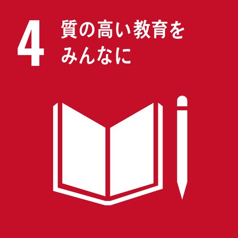
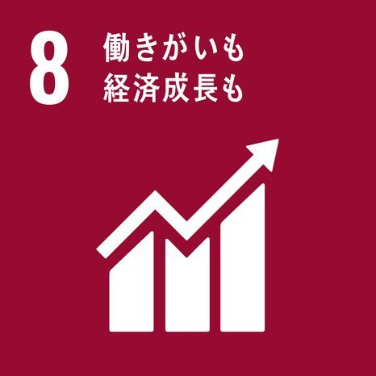
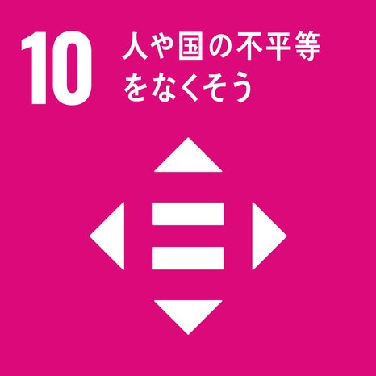

SDGs（持続可能な開発目標）は、2030年までに達成を目指す国際社会の共通目標です。AIかけこみ寺は、AI教育を通じて以下の3つの目標に貢献しています。
🏅 名古屋市SDGs推進プラットフォーム会員（No.900）

AIかけこみ寺は、シニアやAI未経験者が「取り残されない」社会を目指し、地域の生涯学習センターや社会福祉協議会と連携した無償のAI体験講座を提供しています。年齢や経験に関わらず、誰もがAIに触れられる学びの場を地域に広げる活動を続けています。

AI活用スキルの習得を通じて、シニアや求職者が新たな可能性を発見し、地域の生産性向上に貢献することを目指しています。

テクノロジーの恩恵が届かない人々のもとへ、人が足を運んで届ける。デジタルデバイドの解消に向け、地域に根差した取り組みを行っています。